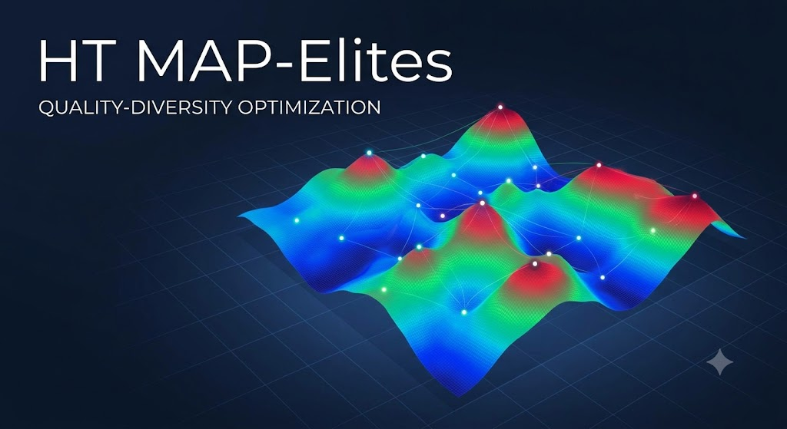
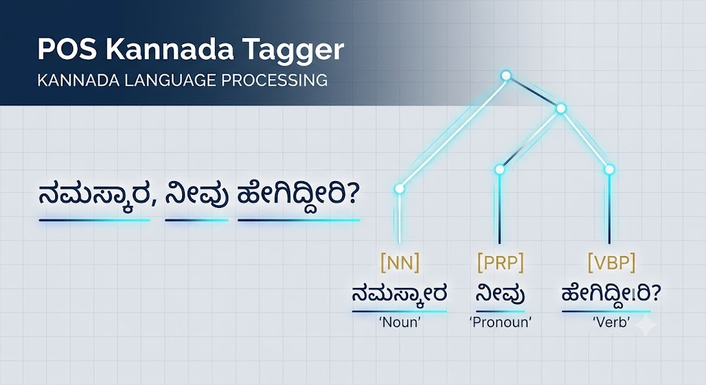

HT MAP-Elites
A MAP-Elites framework that integrates Hypothesis Testing to statistically validate quality of images stored.

POS Kannada Tagger
A machine learning based Part-of-Speech (POS) tagger designed for the Kannada language using Hidden Markov Models & Viterbi Algorithm.

Image Filtering Pipeline
An automated dataset curation pipeline optimized for processing, filtering, and refining person crops.